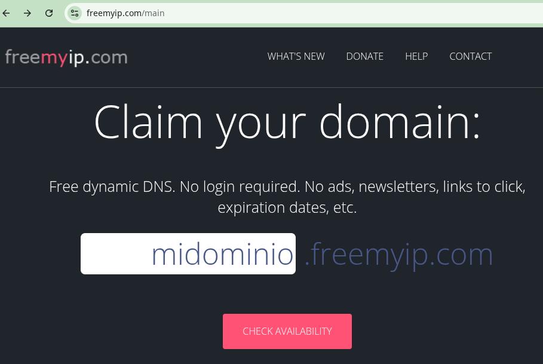
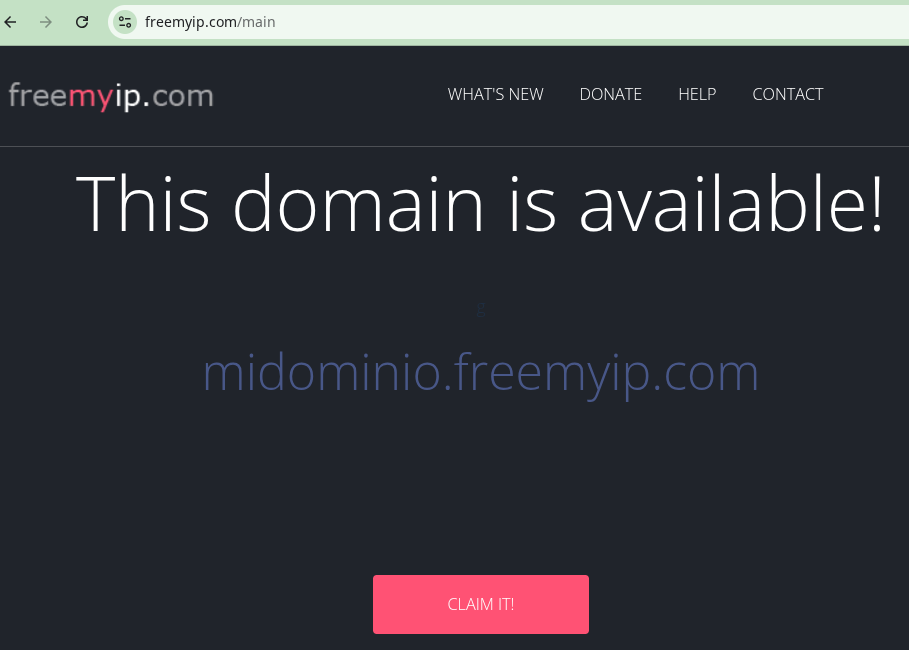
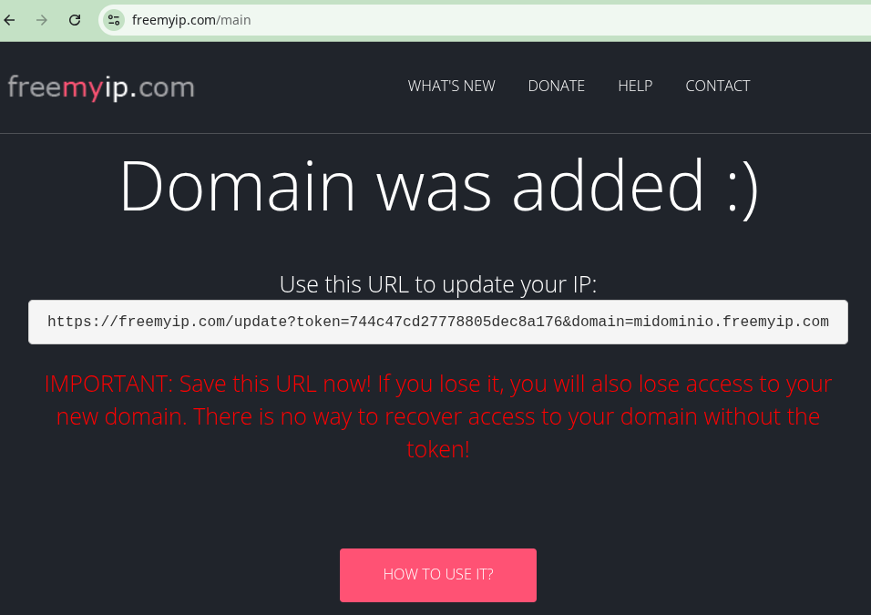
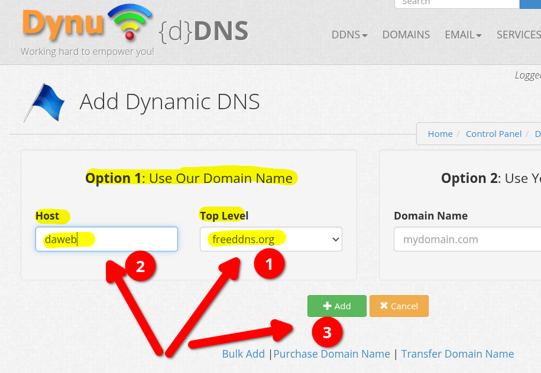
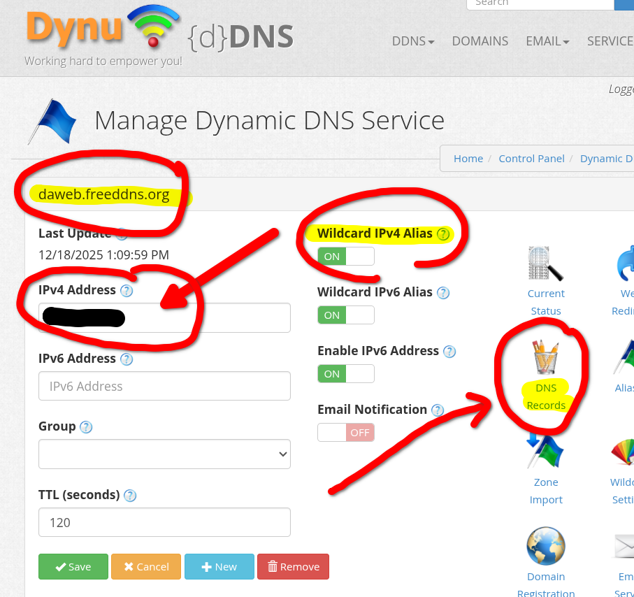

DNS en local¶
Se trata de resolver direcciones de dominios a la dirección de host local 127.0.0.xxx. Esto permitirá trabajar en un entorno local.
Para ello dispone de varias aproximaciones:
- Modificar
/etc/hosts - Usar el dominio
.localhost - usar un gestor de dominios y redirigir a
127.0.0.xxx
Info
En otro apartado se usaran direcciones IP públicas con una instancia EC2 de AWS.
1. Primera aproximación: /etc/hosts¶
Lo más sencillo para hacer pruebas en local es modificar el fichero /etc/hosts. Tenga en cuenta que para resolver la IP de un nombre de host se consulta primero el fichero /etc/hosts y si no hay correspondencia se consulta a los servidores DNS.
Se puede asociar en ese fichero el nombre de un dominio (por ejemplowhoami.md.internal) a la dirección local 127.0.0.1 y podría usar ese nombre en sus pruebas en local con el navegador, etc.
Puede probar la resolución del nombre a IP:
$ getent hosts test.md.internal
127.0.0.1 test.md.internal localhost
$ ping -c 3 test.md.internal
PING test.md.internal (127.0.0.1) 56(84) bytes of data.
64 bytes from test.md.internal (127.0.0.1): icmp_seq=1 ttl=64 time=0.027 ms
...
3 packets transmitted, 3 received, 0% packet loss,
~$
Esta solución puede ser suficiente para el desarrollo de prácticas en local.
2. El dominio .locallhost¶
¿Y si no tuviera permisos para modificar el ficher /etc/hosts? En ese caso se puede utilizar el "dominio" .localhost que resuelve por defecto a 127.0.0.1.
Observe un ejemplo con el dominio sitio1.localhost. Si tiene funcionado un servidor web
La petición usando el nombre del dominio
O si hace la petición a un subdominio
Tenga en cuenta que es algo "interno" y no es una resolución de host a IP (que sí lo era en el apartado previo)
Esta solución podría también ser suficiente para el desarrolo de prácticas en local.
3. Usando un dominio registrado¶
Esta tercera opción pretende usar un gestor de dominios para mapear el nombre de dominio a la dirección local 127.0.0.xxx
3.1. Dominios gratuitos¶
Primero necesita conseguir un nombre de dominio para su IP sin coste. Hay varias opciones, entre ellas:
- freemyip.com, no es necesario registrarse. Ayuda
- Dynu: https://www.dynu.com/en-US/
- duckdns: Admite wildcards xxx.midominio.duckdns.org y admite registros tipo TXT. https://duckdns.org
- noip.com: https://www.noip.com/es-MX/free
- FreeDNS: http://freedns.afraid.org
- Nominalia: primer año gratis, pero hay que dar tarjeta https://www.nominalia.com/
- Freenom (parece que no funciona): https://www.freenom.com/
3.2. Usando un gestor DNS gratuito: freemyip¶
En este ejemplo usaremos freemyip que no requiere crear una cuenta y proporciona un token asociado al nombre de dominio para la gestión. Además, sus subdominios heredan la IP de forma que por ejemplo
midominio.freemyip.com
whoami.midominio.freemyip.com
app1.midominio.freemyip.com
wordpress.midominio.freemyip.com
pueden resolver todos a la misma dirección.
3.3. Registro en freemyip¶
Página inicial dónde se especifica el nombre deseado:

Si está libre nos lo indica y da la oprtunidad de solicitarlo usando el botón CLAIM IT!

Y finalmente nos indica la URL para actualizar al IP, que incluye el token para la gestión y el nombre del dominio. Es importante no perder ese token porque no hay forma de recuperarlo y se pierde el dominio.

Por defecto se asocia el dominio a la IP desde que se realiza la petición. Si desea comprobar:
clases@d13:~$ dig +short midominio.freemyip.com
81.40.165.129
clases@d13:~$ dig +short app.midominio.freemyip.com
81.40.165.129
clases@d13:~$
freemyip permite gestionar el dominio creado mediante peticiones URL. Tiene los detalles en su ayuda.
3.4. Resolviendo el nombre de dominio a localhost¶
Esto es una "solución" para el caso de pruebas en local que requieran de resolución de nombres "reales" y no desea utilizar las soluciones anteriores:
- modificar el fichero
/etc/hosts - o usar el dominio
.localhost,
freemyip permite gestionar el dominio creado mediante peticiones URL que incluyan el token y el domain. Una de las opciones es especificar la IP que desea asociar al dominio usando el parámetro myip en la URL. Sería algo similar a
Si desea asociar el dominio a su dirección de localhost podrá usar la ip 127.0.0.1 (es posible que la .1 le de error y tenga que usar la .2, etc).
Par comprobar use dig:
y debería obtener la IP de localhost.
Warning
Si accede a la API sin especificar el campo myip se entiende que la IP a utilizar es la del equipo desde que hace la consulta.
4. Anexo freemyip¶
4.1. Resolviendo a IP públicas¶
El procedimento es similar: basta indicar en la URL la IP de su servidor externo o instancia AWS EC2. Tenga encuenta que la IP de las instancias AWS EC2 de los laboratorios cambia (a no ser que use IP elástica).
4.2. Añadir registro TXT en el dominio¶
Puede ser en algún momento necesario añadir un registro TXT asociado al dominio (por ejemplo nos pueden solicitar añadirlo un registro TXT con un texto determinado para demostrar que ser propietario del dominio).
You can use an optional "&txt" parameter to do that. This will also automagically work for any subdomain within your domain. If you want to remove your TXT record, use "&txt=null" or "&txt=". You can also add parameter "&verbose=yes" to see some more information in the output, especially if you encounter an error. Any time you change your TXT record, you will have to wait around 1 minute for DNS cache to get updated.
Algo similar a
5. Anexo: otros gestores de dominio¶
5.1. Dominio en Dynu¶
Puede darse de alta en https://www.dynu.com/en-US/
5.1.1. Dominio DDNS¶
Puede añadir un dominio en el menú DDNS, opción SIGN UP. Este debería ser el enlace:
https://www.dynu.com/en-US/ControlPanel/AddDDNS
Debe usar la opción Option 1: Use Our Domain Name, seleccionar uno de sus dominios en el desplegable y elegir un Nombre de Host. Luego pulsar el botón Add

Una vez creado le muestra el dominio y observe que de formaautomática le ha asignado una IP a ese dominio. Esa IP es la del equipo del que se está conectando, y lo habitual es que sea la IP pública del router de la red desde la que se esté conectando en ese momento.

Importante:
- Esa IPv4 Address será la que deberá sustitutir por la IP Elásctica de su instancia EC2.
- Observe que tiene activo por defecto las Wirldcard IPv4 alias, por lo que cualquier nombre que termine en
.daweb.freedns.orgcomowhoami.daweb.freedns.orgowww.daweb.freedns.orgresuelve la misma IP. - Puede acceder a la gestión en detalle tiene a la derecha la opción DNS Records.
5.2. TODO: dominio en .tech¶
El dominio .tech es gratuito usando el Developer Pack Student de GitHub. En este caso tenga en cuenta que:
- Importante: debe realizar el alta desde esta dirección: https://get.tech/github-student-developer-pack.
- Buscar y seleccionar un dominio libre
- Al ordenar el pago hay un botón para identificarse con su cuenta de GitHub (la que esté asociada a los beneficios del github student developer pack). Al usar esa opción el coste del dominio debe ser gratuito durante un año.
- Para gestionar el dominio acceda a http://controlpanel.tech/customer.
5.3. Otros servicios DNS¶
5.3.1. duckdns¶
- Puede hacer el alta con su cuenta de Github o Google
- Admite registros wildcard como
xxxx.midominio.duckdns.org(puede ser útil por ejemplo para la práctica de un proxy inverso como traefik). - Admite registros del tipo TXT
- Para asociar la IP a u nombre de dominio:
- Se puede especificar manualmente en su web
- Se puede auto detectar desde su página web (pero detecta el equipo desde donde se accede)
- Se puede hacer una actualización con peticiones a su API HTTP desde el equipo destino. Más detalles en este enlace.
5.3.2. noip¶
- Sólo admite un registro para un host:
midominio.ddns.net - Se puede asociar la IP manualmente en su web o instalar cliente en el equipo destino.
6. Enlaces¶
- Duck DNS: https://www.duckdns.org/
- noip DNS: https://my.noip.com/dynamic-dns/duc
- Otras posibilidades:
- Best Free Dynamic DNS Services: https://www.gnutomorrow.com/best-free-dynamic-dns-services/
- Freedns https://freedns.afraid.org/ y Dynamic DNS: https://freedns.afraid.org/dynamic/
- Namecheap: https://www.namecheap.com/ y Nc.me: Namecheap is giving university students a free bundle to kickstart their online presence.: https://nc.me/
- ¿Qué son las direcciones IP elásticas de AWS y qué hacen? https://es.linux-console.net/?p=7127#google_vignette
- Configurar DNS dinámico en la instancia de Amazon Linux - Amazon Elastic Compute Cloud https://docs.aws.amazon.com/es_es/AWSEC2/latest/UserGuide/dynamic-dns.html